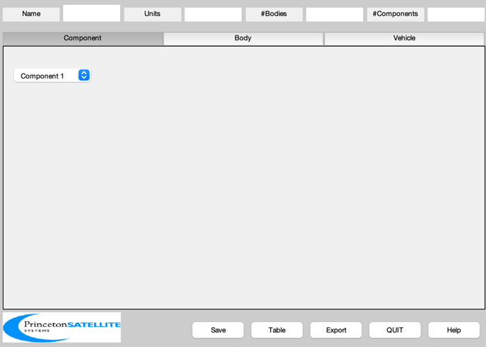
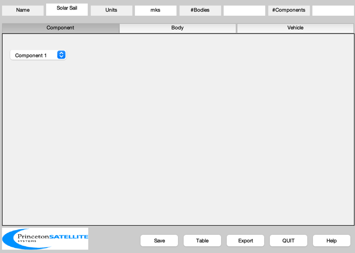
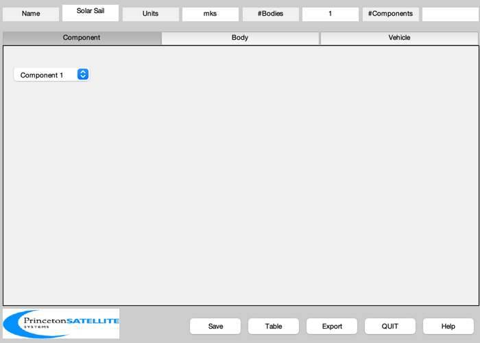
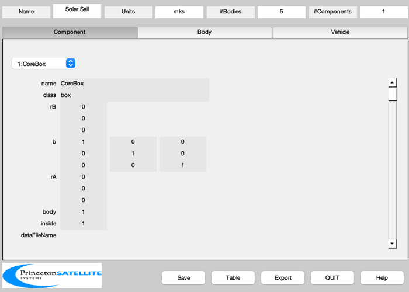
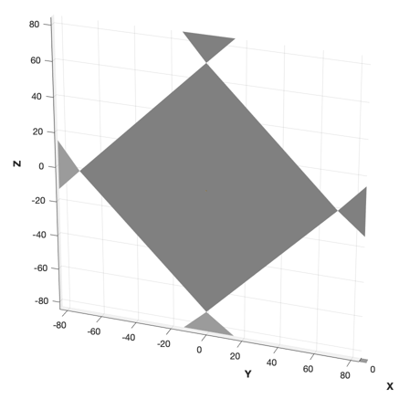

Design a nonideal sail model with four control vanes.
Since version 9.
------------------------------------------------------------------------
See also BuildCADModel, CreateBody, CreateComponent, DrawSCPlanPlugIn,
Inertias, Eul2Mat, FindDirectory, SaveStructure, Unit, CP1Props
------------------------------------------------------------------------
Contents
Script control
createFiles = 1;
Properties
sailWidth = 100.0;
coreWidth = 0.5;
coreMass = 100.0;
arealMass = 0.003;
fracVane = 0.02;
Create the sail mass structure
areaSail = sailWidth^2;
sailMass = areaSail*arealMass;
inertiaSail = Inertias( sailMass, [sailWidth sailWidth], 'plate', 1 );
bXToZ = [0 0 -1;0 1 0;1 0 0];
massSail = struct('inertia', bXToZ*inertiaSail*bXToZ', 'mass', sailMass, 'cM', [0;0;0] );
Optical properties
[optical, infrared, thermal] = CP1Props;
Initialize
BuildCADModel( 'initialize' );

Add general properties
BuildCADModel( 'set name' , 'Solar Sail' );
BuildCADModel( 'set units', 'mks' );

Create CAD bodies first
Core
m = CreateBody( 'make', 'name', 'Core' );
BuildCADModel('add body', m );

Vanes
1: +Y, 2: +Z, 3: -Y, 4: -Z
lBoom = sailWidth*sqrt(2)/2;
rHingeVane = Unit([0 0 0 0 ; 1 0 -1 0; 0 1 0 -1])*lBoom;
bHingeVane = { Eul2Mat([pi/2 0 0]) eye(3) Eul2Mat([3*pi/2 0 0]) Eul2Mat([pi 0 0]) };
thetaCant = 15*pi/180;
bCant = Eul2Mat([0;thetaCant;0]);
for k = 1:4
m = CreateBody( 'make', 'name', ['Vane ' num2str(k)], 'previousBody', 1,...
'rHinge', rHingeVane(:,k),...
'bHinge', struct( 'b', bHingeVane{k}*bCant, 'axis', 3 ));
BuildCADModel('add body', m );
end
This creates the connections between the bodies
BuildCADModel( 'compute paths' );
Create CAD Components second
Core
m = CreateComponent( 'make', 'box','x',coreWidth, 'y', coreWidth, 'z', coreWidth,...
'name','CoreBox','body',1,...
'mass', coreMass, 'faceColor', 'gold foil', 'inside', 1 );
BuildCADModel( 'add component', m );

Sail
v = [0 0 0 0;0.5 -0.5 -0.5 0.5;0.5 0.5 -0.5 -0.5]'*sailWidth;
m = CreateComponent( 'make', 'sail','name','Sail','body',1,...
'mass', massSail, 'faceColor', 'mirror',...
'rA',[0;0;0],'b',Eul2Mat([pi/4;0;0]),...
'sigmaA', optical.sigmaA,...
'sigmaD', optical.sigmaD,...
'sigmaS', optical.sigmaS,...
'sigmaT', optical.sigmaT,...
'emissivity',thermal.emissivity,...
'sigmaRS',infrared.sigmaRS,'sigmaRD',infrared.sigmaRD,'sigmaRA',infrared.sigmaRA,...
'vertex',v ,'face', [1 2 3; 1 3 4], 'inside', 0 );
BuildCADModel( 'add component', m );
Vanes - right triangles. Treat as masses at end of booms for inertia.
areaVane = fracVane*areaSail;
massVane = arealMass*areaVane;
lVane = sqrt(2*areaVane);
hVane = 2*sqrt(areaVane);
sVane = sqrt(lVane^2 - (hVane/2)^2);
v = [ 0 0 0;...
0 hVane/2 -hVane/2;...
0 sVane sVane]';
f = [1 2 3];
vaneName = {'+Y' '+Z' '-Y' '-Z'};
for k = 1:4
m = CreateComponent( 'make', 'sail', 'faceColor', 'mirror', 'edgeColor', [1 0.8 0.34],...
'vertex', v, 'face', f,...
'rA', [0;0;0], 'mass', massVane, 'name', ['Vane ' vaneName{k}], 'body', k+1,...
'sigmaA', optical.sigmaA,...
'sigmaD', optical.sigmaD,...
'sigmaS', optical.sigmaS,...
'sigmaT', optical.sigmaT,...
'sigmaRS',infrared.sigmaRS,'sigmaRD',infrared.sigmaRD,'sigmaRA',infrared.sigmaRA,...
'emissivity',thermal.emissivity,...
'inside',0);
BuildCADModel( 'add component', m );
end
Export
if( createFiles )
g = BuildCADModel( 'get cad model' );
c = cd;
cd(FindDirectory('SailData'));
SaveStructure( g, 'SailWithFourVanes' );
cd(c);
end
DrawSCPlanPlugIn( 'initialize', g );
view(110,25)
